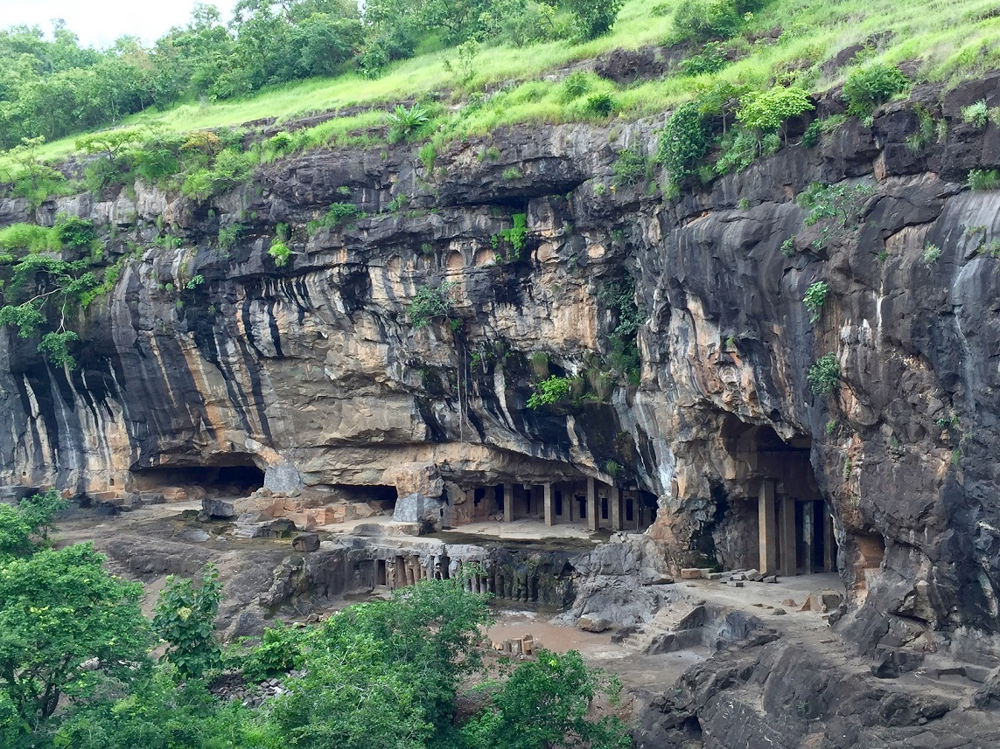
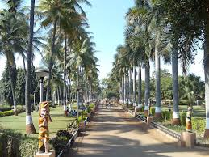

CITY OF GATES | |||||||
| HOME | PACKAGE | MAPS | CALANDER | ABOUT | |||
|
Aurangabad city of gates ! Aurangabad is a historic city in Maharashtra state of India. The city is a tourist hub, surrounded by many historical monuments, including the Ajanta Caves and Ellora Caves, which are UNESCO World Heritage Sites, as well as Bibi Ka Maqbara and Panchakki. The administrative headquarters of the Aurangabad Division or Marathwada region, Aurangabad, is said to be a City of Gates and the strong presence of these can be felt as one drives through the city. In 2010, the Maharashtra Tourism Minister declared Aurangabad to be the tourism capital of Maharashtra. It is also one of the fastest growing cities in the world. Aurangabad (About this soundpronunciation is a city in the Indian state of Maharashtra. It is the administrative headquarters of Aurangabad district and is the largest city in the Marathwada region.[4] Located on a hilly upland terrain in the Deccan Traps, Aurangabad is the fourth-most populous urban area in Maharashtra with a population of 1,175,116. The city is known as a major production center of cotton textile and artistic silk fabrics. Several prominent educational institutions, including Dr. Babasaheb Ambedkar Marathwada University, are located in the city. The city is also a popular tourism hub, with tourist destinations like the Ajanta and Ellora caves lying on its outskirts, both of which have been designated as UNESCO World Heritage Sites since 1983. Another tourist destination is the Bibi Ka Maqbara ("Tomb of the Lady"), also known as Dakkhanī Tāj or the "Taj Mahal of the Deccan", which was commissioned in 1660 by the Mughal emperor, Aurangzeb (reigned from 1658 to 1707), to house the tomb of his favourite wife, Dilras Banu Begum. Other tourist attractions include Aurangabad Caves, Daulatabad Fort, Grishneshwar Temple, Jama Mosque, Himayat Bagh, Panchakki and Salim Ali Lake. Historically, there were 52 Gates in Aurangabad, some of them extant, because of which Aurangabad is nicknamed as the "City of Gates". In 2019, the Aurangabad Industrial City (AURIC) became the first greenfield industrial smart city of India under the country's flagship Smart Cities Mission. Paithan, the imperial capital of the Satavahana dynasty (1st century BCE–2nd century CE), as well as Daulatabad or Dēvagirī, the capital of the Yadava dynasty (9th century CE–14th century CE), are located within the limits of modern Aurangabad. In 1308, the region was annexed by the Delhi Sultanate during the rule of Sultan Alauddin Khalji. In 1327, the capital of the Delhi Sultanate was shifted from Delhi to Daulatabad (in present-day Aurangabad) during the rule of Sultan Muhammad bin Tughluq, who ordered a mass migration of Delhi's population to Daulatabad. However, Muhammad bin Tughluq reversed his decision in 1334 and the capital was shifted back to Delhi. In 1499, Daulatabad became a part of the Ahmadnagar Sultanate. In 1610, a new city named Khaḍkī was established at the location of modern Aurangabad to serve as the capital of the Ahmadnagar Sultanate by the Ethiopian military leader Malik Ambar, who was brought to India as a slave but rose to become a popular Prime Minister of the Ahmadnagar Sultanate. Malik Ambar was succeeded by his son Fateh Khan, who changed the name of the city to Fatehnagar. In 1636, Aurangzeb, who was then the Mughal viceroy of the Deccan region, annexed the city into the Mughal Empire. In 1653, Aurangzeb renamed the city as "Aurangabad" and made it the capital of the Deccan region of the Mughal Empire. In 1724, the Mughal governor of the Deccan, Nizam Asaf Jah I, seceded from the Mughal Empire and founded his own Asaf Jahi dynasty. The dynasty established the State of Hyderabad with their capital initially at Aurangabad, until they transferred their capital to the city of Hyderabad in 1763. Hyderabad State became a princely state during the British Raj, and remained so for 150 years (1798–1948). Until 1956, Aurangabad remained part of Hyderabad State. In 1960, Aurangabad and the larger Marathi-speaking Marathwada region became a part of the state of Maharashtra. Bibi Ka Maqbara  Bibi Ka Maqbara: Situated about 3 km from the city is Bibi Ka Maqbara, the burial place of Aurangzeb's wife, Rabia-ud-Durrani. It is an imitation of the Taj at Agra, and, due to its similar design, it is popularly known as the Mini Taj of the Deccan. The Maqbara stands in the middle of a spacious and formally planned Mughal garden with axial ponds, fountains, water channels, broad pathways and pavilions. Behind the mausoleum is a small archaeological museum. Panchakki (water mill)  Housed in the Dargah complex of Baba Shah Musafir, this is a 17th-century water mill situated at a distance of 1 km from the city. An intriguing water mill, the Panchakki is famous for its underground water channel, which traverses more than 8 km to its source away in the mountains. The channel culminates in an artificial waterfall that powers the mill. Kali Masjid, Jama Masjid  Among the mosques, the Jumma Masjid and the Kali Masjid, built by Malik Ambar, and the Shah Ganj mosque, are the most conspicuous. Malik Ambar is said to have built seven mosques which go by the general name of Kali Masjid. The Kali Masjid is in Juna Bazar area and was erected in 1600 A. D. It is a six-pillared stone-building standing on a high plinth. The Jumma Masjid of Malik Ambar is near the Killa Arrak. It has fifty polygonal pillars arranged in five rows, connected by a system of arches, which divide the building into twenty-seven equal compartments, each covered by a domical vault of simple but elegant design. There are nine pointed arches in front. Of these, five were erected by Malik Ambar in 1612 A.D. and the remaining four were added by Aurangzeb. Aurangabad Caves  Situated at a distance of 5 km, nestled amidst the hills are 12 Buddhist caves probably dating back to 3 A.D. Of particular interest are the Tantric influences evident in the iconography and architectural designs of the caves. They also offer a panoramic view of the city as well as the imposing Maqbara. Mahismal hill station Mhaismal, is a hill station located in the Aurangabad District of Maharashtra. The Hill Station is situated at an altitude of 1067 meters, is about 12 kilometers from Khuldabad and is about 40 Kilometers from Aurangabad City. On the way there are Ellora Caves, Grishneshwar Temple and Devgiri Fort. Mhaismal attracts visitors during monsoons when it is covered in greenery. Daulatabad Fort  Daulatabad Fort, also known as Devagiri or Deogiri, is a historical fortified citadel located in Aurangabad, Maharashtra, India. It was the capital of the Yadava dynasty (9th century–14th century CE), for a brief time the capital of the Delhi Sultanate (1327–1334), and later a secondary capital of the Ahmadnagar Sultanate (1499–1636). Around the sixth century CE, Devagiri emerged as an important uplands town near present-day Aurangabad, along caravan routes going towards western and southern India. The historical triangular fortress in the city was initially built around 1187 by the first Yadava king, Bhillama V. In 1308, the city was annexed by Sultan Alauddin Khalji of the Delhi Sultanate, which ruled over most of the Indian subcontinent. In 1327, Sultan Muhammad bin Tughluq of the Delhi Sultanate renamed the city as "Daulatabad" and shifted his imperial capital to the city from Delhi, ordering a mass migration of Delhi's population to Daulatabad. However, Muhammad bin Tughluq reversed his decision in 1334 and the capital of the Delhi Sultanate was shifted back from Daulatabad to Delhi. In 1499, Daulatabad became a part of the Ahmadnagar Sultanate, who used it as their secondary capital. In 1610, near Daulatabad Fort, the new city of Aurangabad, then named Khadki, was established to serve as the capital of the Ahmadnagar Sultanate by the Ethiopian military leader Malik Ambar, who was brought to India as a slave but rose to become a popular Prime Minister of the Ahmadnagar Sultanate. Most of the present-day fortification at Daulatabad Fort was constructed under the Ahmadnagar Sultanate. Gautala Autramghat Sanctuary Gautala Autramghat Sanctuary is a protected area of Maharashtra state, India. It lies in the Satmala and Ajantha hill ranges of the Western Ghats, and administratively is in Aurangabad District and Jalgaon District. The wildlife sanctuary was established in 1986 in an existing reserved forest area. It covers a total area of 26,061.19 hectares (64,399 acres) with Reserved Forest Areas of 19706 ha. in Aurangabad and 6355.19 ha. in Jalgaon. Its name comes the nearby village of Gautala, which was itself named after Gautam Rishi, a Hindu ascetic mentioned in the Ramcharitmanas. Pitalkhora Caves  The Pitalkhora Caves, in the Satamala range of the Western Ghats of Maharashtra, India, are an ancient Buddhist site consisting of 14 rock-cut cave monuments which date back to the third century BCE, making them one of the earliest examples of rock-cut architecture in India. Located about 40 kilometers from Ellora, the site is reached by a steep climb down a flight of concrete stairs, past a waterfall next to the caves. Siddharth Garden  Set in the heart of Aurangabad city, Siddharth Garden is a beautiful garden, well-known for housing a wide variety of trees and shrubs. Covering a large area, the garden is a popular picnic spot of the city. The garden is popular among nature lovers, joggers and photographers. The garden is beautifully designed and very well-maintained, which allures tourists from all over the city and the country. Colorful flowers, majestic trees and picture perfect lawns are the main highlights of the garden. There is a small aquarium in the garden, where you can find variety of fishes. There is also a zoo in the garden where you can find a number of wild animals like tigers, lions, leopards, Civet cats, snakes (snake house), crocodiles, emu, fox, deer, hyena and more. Siddharth Garden is a great place for those who wish to spend some time amid peace and relax. Both locals and tourists visit the garden in large numbers. The garden is also easily accessible as it is located very close to the railway station. | |||||||
{kind=link}
{kind=link}
{kind=link}
{kind=link}